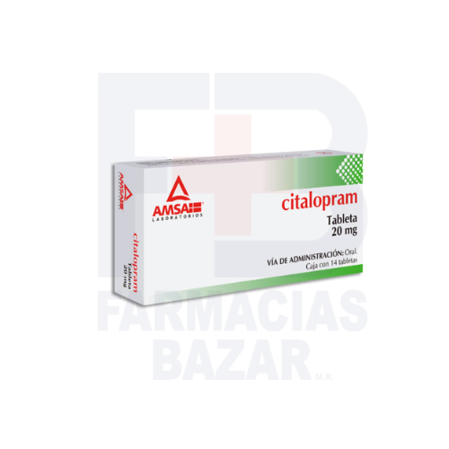
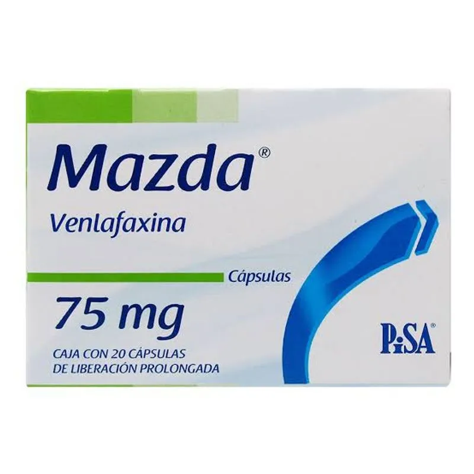
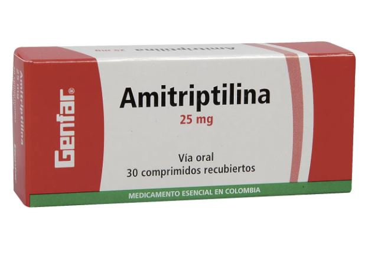
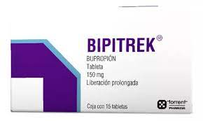
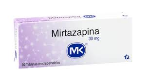
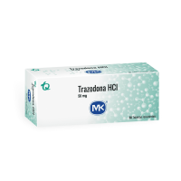

Mecanismo de Acción
- ISRS (Inhibidores selectivos de la recaptura de serotonina): Inhiben la recaptura de serotonina (5-HT) en la sinapsis, aumentando su disponibilidad.
- IRSN (Inhibidores de recaptura de serotonina y noradrenalina): Inhiben la recaptura de serotonina y noradrenalina.
- Tricíclicos (ATC) Inhiben la recaptura de serotonina y noradrenalina, y bloquean receptores muscarínicos, histamínicos y adrenérgicos.
- IMAO (Inhibidores de la monoaminooxidasa): Inhiben la enzima MAO que degrada monoaminas (serotonina, dopamina, noradrenalina).
- Otros atípicos (bupropión, mirtazapina, trazodona): Varían: algunos inhiben la recaptura de dopamina o noradrenalina; otros bloquean receptores específicos (alfa2, 5HT2).
Indicaciones Terapéuticas
- Trastorno depresivo mayor
- Trastorno de ansiedad generalizada
- Trastorno obsesivo-compulsivo (TOC)
- Trastorno de pánico
- Trastorno afectivo estacional
- Trastornos del sueño (ciertos antidepresivos sedantes como trazodona)
- Dolor neuropático (amitriptilina, duloxetina)
- Trastorno por estrés postraumático (TEPT)
- Dejar de fumar (bupropión)
Contraindicaciones
- Hipersensibilidad al fármaco
- Uso concomitante con IMAO (riesgo de síndrome serotoninérgico)
- Epilepsia mal controlada (riesgo de convulsiones con algunos como bupropión)
- Glaucoma de ángulo cerrado (con ATC)
- Trastornos hepáticos graves (precaución)
- Embarazo y lactancia (evaluar riesgo/beneficio según fármaco)
Posología
- Iniciar con dosis bajas e incrementar según respuesta y tolerancia.
- Tiempo de acción terapéutica: 2 a 4 semanas.
- Ejemplos orientativos:
- ISRS (fluoxetina, sertralina, citalopram): 10-40 mg/día
- IRSN (duloxetina, venlafaxina): 30-150 mg/día
- ATC (amitriptilina): 25-150 mg/día
- IMAO: 30-60 mg/día
- Bupropión: 150-300 mg/día
- Mirtazapina: 15-45 mg/día
- Trazodona: 50-150 mg/día (a veces hasta 300 mg para depresión)
Reacciones adversas
- ISRS: Náuseas, insomnia, disfunción sexual, ansiedad inicial, síndrome serotoninérgico
- IRSN: Mareo, náuseas, hipertensiónn (Venlafaxina), insomnio
- ATC: Somnolencia, boca seca, estreñimiento, visión borrosa, hipotensión ortostática, aumento de peso, riesgo cardiotóxico en sobredosis.
- IMAO: Hipotensión, mareo, insomnio, crisis hipertensiva con alimentos ricos en tiramina.
- ATÍPICOS
- Bupropión: insomnio, riesgo convulsivo.
- Mirtazapina: sedación, aumento de peso
- Trazodona: somnolencia, hipotensión, priapismo (raro).
Interacciones medicamentosas
- Con IMAO o entre antidepresivos serotoninérgicos: riesgo de síndrome serotoninérgico (agitación, hipertermia, temblores, confusión).
- Con alcohol y depresores del SNC: potenciación de efectos sedantes.
- Con anticoagulantes/antiagregantes: aumento del riesgo de sangrado (sobre todo con ISRS).
- Inductores/inhibidores del citocromo P450: pueden alterar niveles plasmáticos de varios antidepresivos
- ATC + antihipertensivos: riesgo de hipotensión
- Mirtazapina + benzodiacepinas: sedación excesiva.
Presentacións
- Vía oral (mayoría): tabletas, cápsulas, solución
- Algunos disponibles en gotas (fluoxetina, sertralina).
- Algunos en formulación de liberación prolongada (venlafaxina XR, bupropión SR/XL).
- Existen presentaciones inyectables para ciertos casos urgentes (poco frecuentes)